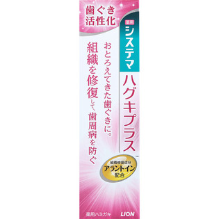
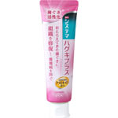

返回列表
产品名称：システマ ハグキプラス ハミガキ

ライオン システマ ハグキプラス ハミガキ ９０ｇ（医薬部外品）
メーカー ライオン
JANコード 4903301216803
商品の特徴
歯ぐき活性化
おとろえてきた歯ぐきに。
組織を修復して、歯周病を防ぐ
薬用
組織修復成分アラントイン配合
成分・分量
PG／香料／イソプロピルメチルフェノール（IPMP）
用法及び用量
ハミガキをハブラシに適量1cm程度取り、ブラッシングしてください。ブラッシングの後は水で口内をすすいでください。